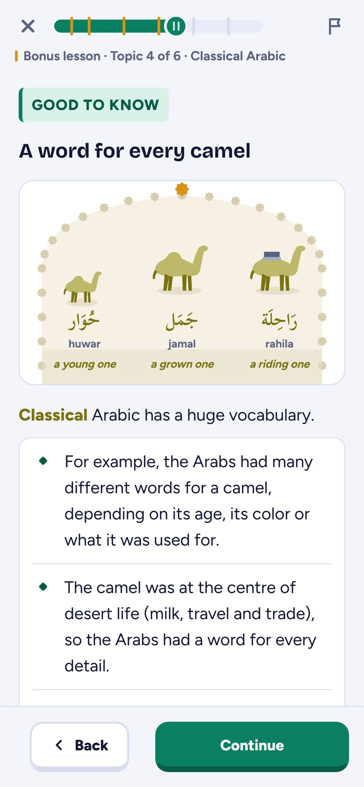
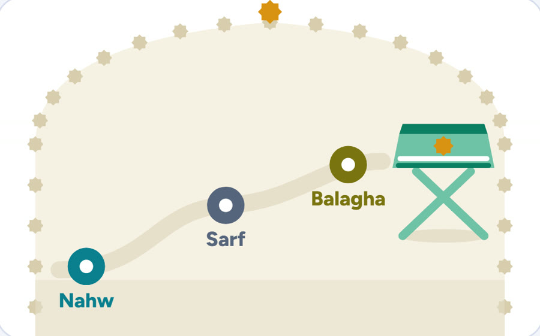
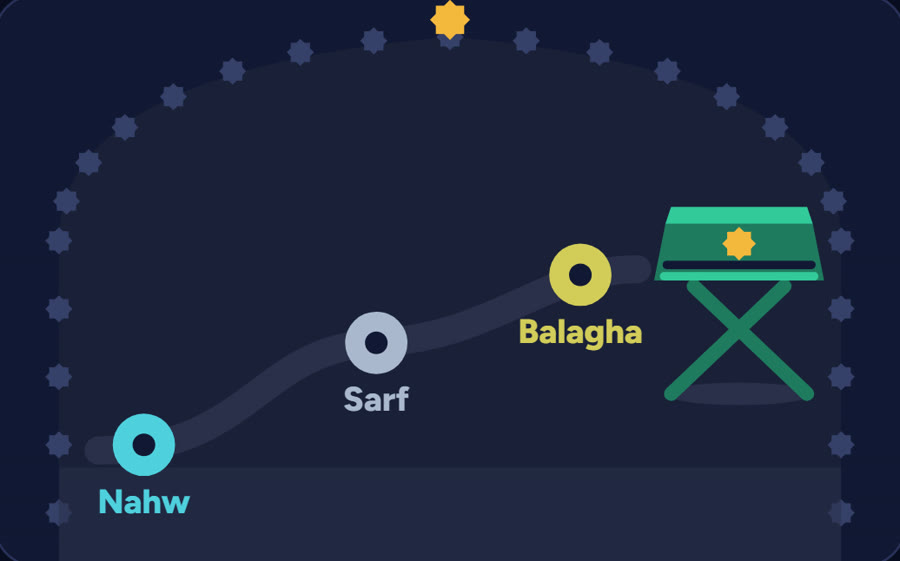
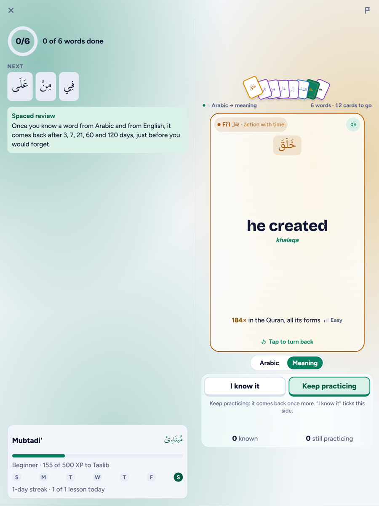
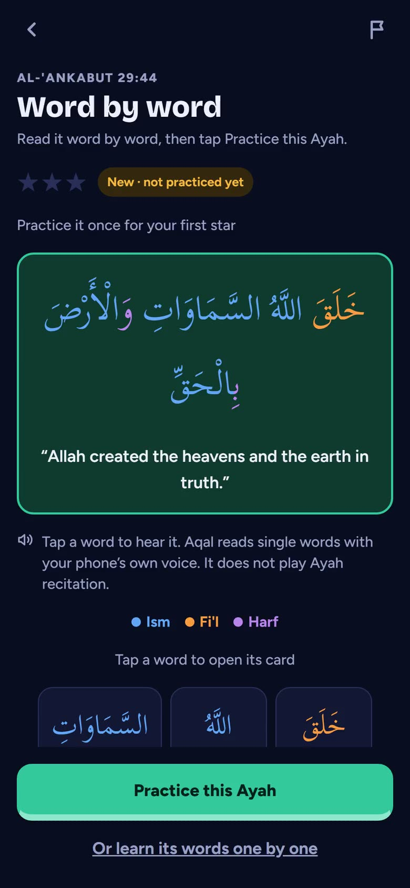

Aqal
LearnArabicGrammarfor the Quran
Understand what you recite
Lessons 1 to 7 are free. Lesson 1 needs no account.
Aqal
So many of us can read and recite the Quran, yet don't know the meaning of what we recite.
Studying the grammar of the Quran's Arabic opens a new understanding of the Quran, and a deeper connection with it.
خَلَقَ اللَّهُ السَّمَاوَاتِ وَالْأَرْضَ بِالْحَقِّ
"Allah created the heavens and the earth in truth." Al-'Ankabut 29:44
You start to see how an Ayah is built: which word is the doer, which is the action, and why the endings change.
Aqal
Onesmall stepa day
5-minute lessons
Each lesson teaches one idea, then you use it on an Ayah from the Quran.
Aqal
Practise onQuran Ayat
Grammar questions in every lesson
Each lesson ends on an Ayah from the Quran. You tap its words, check your answer, and see the reason straight away.
Aqal
MemorizecommonQuran words
with spaced repetition cards
Words you know come back after 3, 7, 21, 60 and 120 days, just before you would forget them.
Aqal
Recite withunderstanding
Connect with the Quran
Every Ayah you meet in a lesson is saved in My Ayat, each word in its family colour, so you can come back, read it again and practise its words.
Aqal
See thebeauty ofQuran's Arabic
Start your Arabic appreciation journey

Aqal
What you'll learn
By the end, you can look at an Ayah and see:
- Nahwhow each word works in it
- Sarfwhere each word comes from
- Balaghawhy each word was chosen
You start with Nahw, in Lesson 1.


Aqal
On iPhone, iPad and Android, and in the browser too.
Lessons 1 to 7 are free, and Lesson 1 needs no account.


Google Play for Android phones and tablets. App Store for iPhone and iPad.
Aqal
Plans
Lessons 1 to 7 are free, with no card needed. Premium opens every lesson after that.
Free
$0
Lessons 1 to 7, for as long as you like
Monthly
$4.99
per month
Every 3 months
$12.99
per 3 months
about $4.33 a month
Time to finish Level 1
Yearly
$39.99
per year
about $3.33 a month
Prices in US dollars; in the app they show in your currency and may be lower in some countries.
Premium renews automatically; cancel any time.
Within 14 days of a payment on the web or Google Play: your money back in full. On iPhone and iPad, Apple decides refunds. Refund policy
Sources you can check
- Quran text: Tanzil Project, Simple Enhanced edition, unchanged.
- English meanings of the Ayat: Saheeh International.
- The grammar of each word, and how often it appears in the Quran: Quranic Arabic Corpus.
Found a mistake? Write to aqal.app.academy@gmail.com: errors in Quran text or in an answer are fixed first.
Questions
Do I need to know Arabic already?
You need to read Arabic script, as you do when you recite. Aqal starts from there: no grammar, vocabulary or Arabic speaking needed.
Who is Aqal for?
Teens and adults who can already read Arabic script, as you do when you recite.
Does Aqal teach the alphabet or tajweed?
No. Aqal teaches the grammar and the words of the Quran, so you understand what you recite.
How long is a lesson?
About 5 minutes. After a lesson come its words to practise and its Ayah.
What is free?
Lessons 1 to 7, the bonus lessons that open along the way, and practice of every word and Ayah you have unlocked. Lesson 1 needs no account.
Which devices does it work on?
Android phones and tablets, iPhone, iPad, and any web browser at aqal.academy/app. One account and one Premium cover all of them.
How do I cancel or get a refund?
Cancel any time. Within 14 days of a payment on the web or Google Play, you get your money back in full. On iPhone and iPad, Apple decides refunds.
Where does the Quran text come from?
The Tanzil Project, unchanged. Meanings come from Saheeh International, and each word's grammar from the Quranic Arabic Corpus.